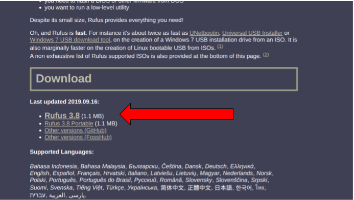
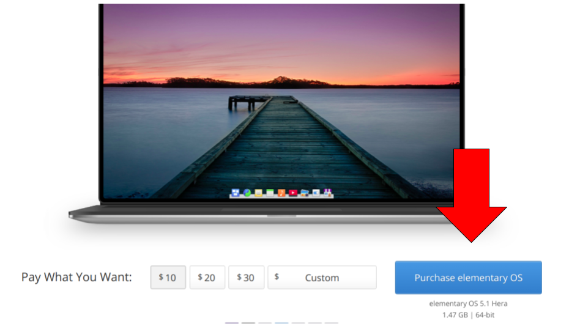
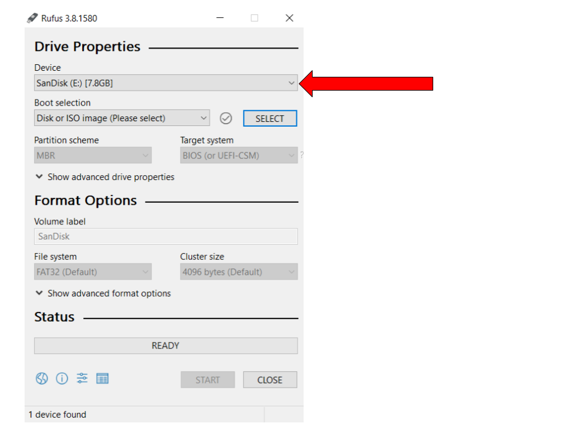
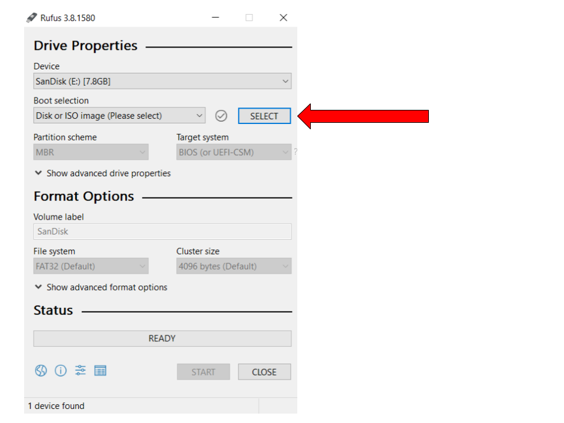
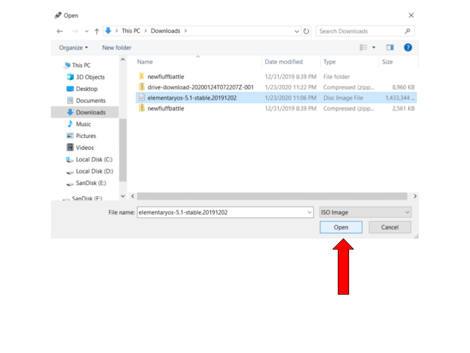
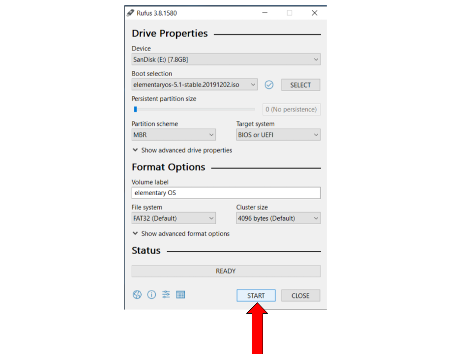
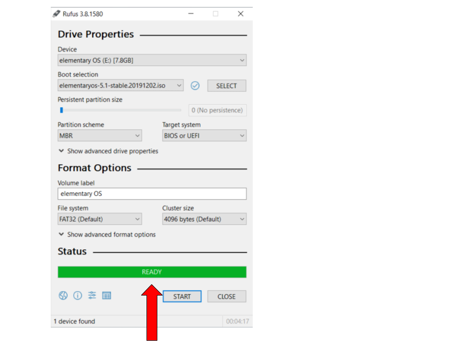

How to Make a Bootable USB drive
Downloading Rufus:
- Go to the Rufus website.
- Scroll down to the "Downloads" section, and select the latest version of Rufus (Rufus 3.8 as of Jan 23, 2020)

Downloading elementary OS:
- Go to the elementary OS website.
- Select the amount you want to pay for elementary OS.
- Click on the Purchase elementary OS or Download button.

NOTE: You can click Custom and type "0" in case you don't want to pay.
Formatting the USB drive:
- Double click the rufus.exe file that we downloaded in step 1.(It should be in your Downloads folder.)
- Select the USB that you want to use under the device drop-down menu.
- Click the Select button.
- Browse through your files to find the elementary OS ISO that we downloaded earlier. (This should also be in your Downloads folder.)
- Click Start.
- If any of the following dialog boxes show up, click on the respective buttons marked by the red arrow.
- A green 'Ready' bar indicates the process has been completed.





